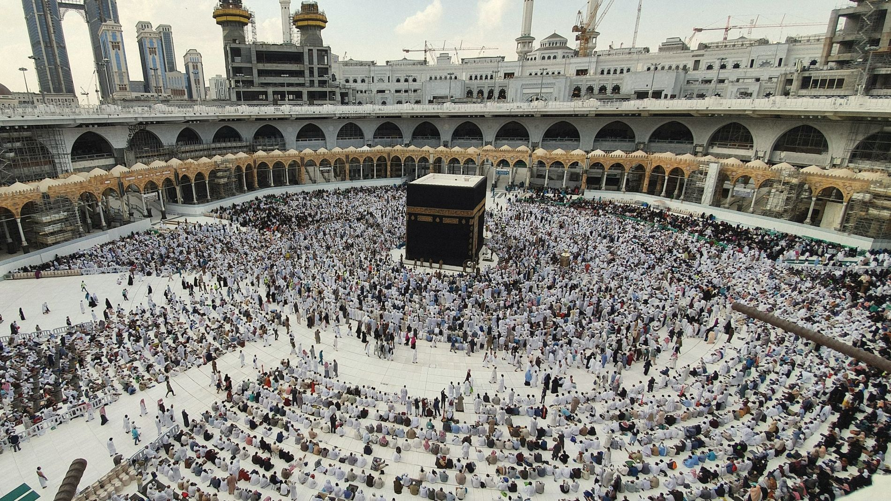
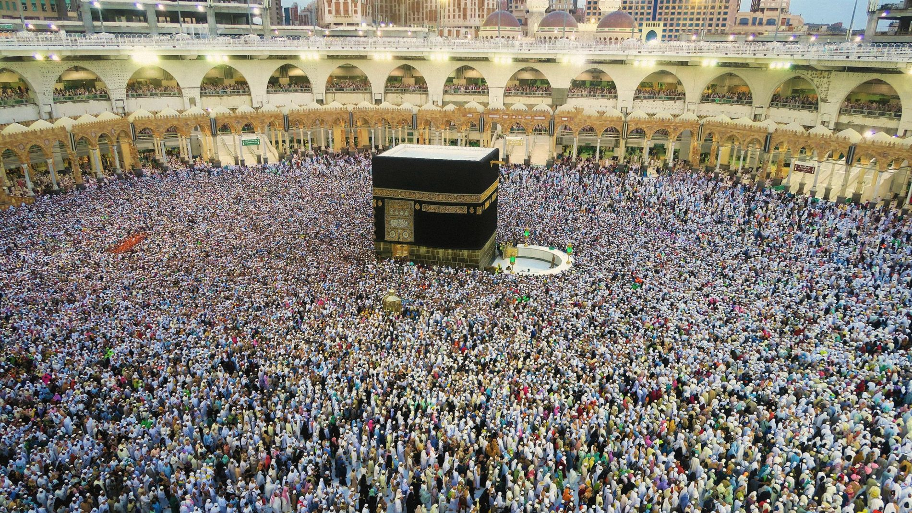
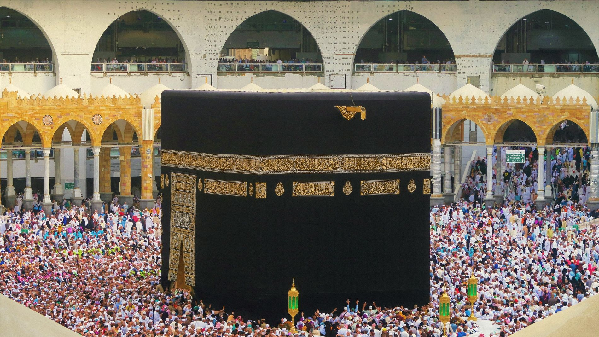
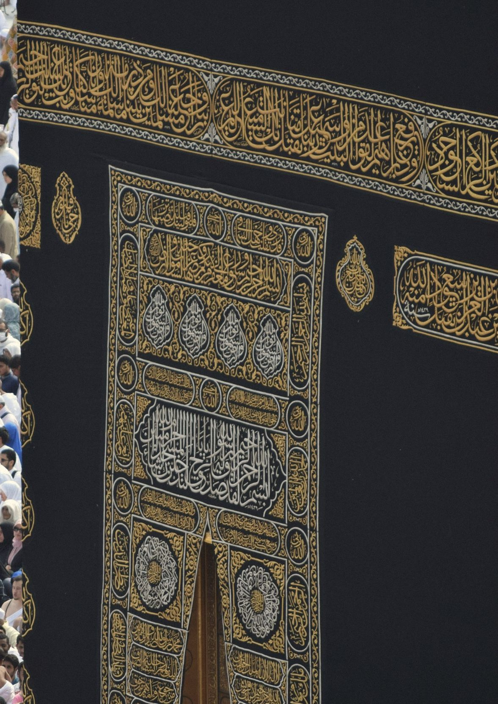

Mescid-i Haram'a giriş
Ayakkabılarınızı bir torbaya koyun, besmele çekip itikâfa niyet ederek sağ ayakla girin. Kâbe'yi ilk gördüğünüz yerde durup tekbir getirin ve dua edin; Kâbe ilk görüldüğünde yapılan dua kabul olunur.
Hazırlıktan dönüşe kadar umrenin her adımını, neyin nasıl yapıldığını ve ne okunduğunu sırasıyla anlatan rehberimize hoş geldiniz.
Bismillahirrahmanirrahim
Yolculuğumuza hazırlıkla başlıyoruz.Umre; ihrama girip Kâbe'yi tavaf etmekten, Safa ile Merve arasında sa'y yapmaktan ve tıraş olup ihramdan çıkmaktan oluşan bir ibadettir. Hanefî mezhebine göre ömürde bir kez umre yapmak sünnet-i müekkededir.
Bu rehberde, Türkiye'den yola çıkan bir kafilenin izlediği sırayı takip ediyoruz. Kafilelerin çoğu önce Medine'ye gider; ihrama, Medine'den Mekke'ye giderken mîkatta girilir. Her durakta o adımın nasıl yapıldığını, ne okunduğunu ve nelere dikkat edildiğini bulacaksınız.
Mîkatta umreye niyet edip telbiye getirerek ihrama girmektir.
Kâbe'nin etrafında yedi şavt dönmektir; ilk dört şavtı farz, kalan üçü vaciptir.
Safa ile Merve tepeleri arasında yedi kez gidip gelmektir.
Saçı kazıtarak ya da kısaltarak ihramdan çıkmaktır.
Rehberimiz Hanefî mezhebine göre, kafile görevlilerinin kullandığı Hac ve Umre Vazifeli Rehberi esas alınarak hazırlanmıştır. Kendi durumunuza dair sorularınız için kafile hocanıza danışın.
Umreye hazırlık, kaydınızı yaptırdığınız gün başlar. Rehberimizin ilk tavsiyesi, bu yolculuğun turistik bir gezi değil, bir ibadet ve sabır yolculuğu olduğunu bilerek yola çıkmaktır.
Geçmiş hatalarınız için kalben pişman olun, tövbe edin ve o hataları bırakmaya niyet edin.
Borçlarınızı ödeyin ya da ödeme yolunu belirleyin. Yakınlarınızla helalleşin; haklı olsanız bile dargın olduğunuz kişilerle barışın.
Kaza namazınız varsa kılmaya başlayın. Nafile ibadetlere ağırlık verin; duhâ (kuşluk), evvâbîn, teheccüd ve tesbih namazlarını kılın. İstiğfar, salavat ve kelime-i tevhidi günlük virdiniz hâline getirin.
Yolculuk masrafının helal kazançtan olmasına dikkat edin. Peygamber Efendimiz, Sa'd bin Ebî Vakkas'a “Helal ye ki duan kabul olsun” buyurmuştur.
Umrenin nasıl yapıldığını önceden öğrenin ve kafilenizin bilgilendirme seminerine mutlaka katılın. Kur'an-ı Kerim okumayı bilmiyorsanız, Kur'an'ın indiği bu topraklara gitmeden önce öğrenmeye başlayın.
Pasaport, vize ve aşı kartı gibi belgeleri kafilenizle erkenden tamamlayın. Aşı kartınızı yanınızda taşıyın.
Kafile görevlinizin Türkiye ve Suudi Arabistan telefon numaralarını not edin. Bagaj hakkınızı ve dönüşte ne kadar zemzem getirebileceğinizi öğrenin.
Yolda yetecek kadar para alın; maddi ve manevi olarak kimseye yük olmayın. İmkânınız ölçüsünde yol arkadaşlarınıza yardım edin ve sadaka verin.
Düzenli kullandığınız ilaçları el çantanızda taşıyın. Kendi ihtiyaçlarını karşılayamayacak durumdaki yakınlarınız ancak bir refakatçiyle yolculuk etmelidir.
İhramı, terliği ve ayakkabıları yola çıkmadan deneyin. İlk kez giyilen terlik, uzun yürüyüşlerde ayağı yarabilir.
Sıcak iklim, kalabalık, yorgunluk ve uzun beklemeler bu yolculuğun bir parçasıdır. Rehberimiz bu anlarda sabırlı, güler yüzlü ve nazik olmayı; sebebi ne olursa olsun kimsenin kalbini kırmamayı tavsiye eder.
İhtiyacınız olanları işaretleyin; işaretleriniz bu cihazda saklanır.
İşaretlediklerinizi bize WhatsApp'tan iletebilirsiniz; hangilerinin mağazamızda bulunduğunu söyleyelim. Elinizdekileri kullanabilir, kalanını dilediğiniz yerden temin edebilirsiniz.
Havalimanında kafilenizle buluşursunuz. Uçak, kafilenin programına göre Medine'ye ya da Cidde'ye iner.
Yolculuk boyunca abdestli olmaya çalışın ve vaktinizi dua, zikir ve salavatla değerlendirin. Namaz vakti uçakta çıkacaksa namazı kazaya bırakmayın; imkânınız ölçüsünde, gerekirse oturduğunuz yerden seferî olarak kılın.
Yola çıkmadan önceki gece iyi dinlenin; mübarek beldelere uykusuz değil, dinç bir hâlde varın.
Evden çıkarken iki rekât sefer namazı kılın. Araca bindiğinizde Fâtiha, üç İhlâs ve sefer duasını okuyun. Rehberimize göre evden çıktığınız andan eve dönüp üç gün geçinceye kadar yaptığınız meşru dualar kabul olunur; bu fırsatı iyi değerlendirin.
Medine'ye uçacaksanız kalkıştan üç saat, Cidde'ye uçacaksanız dört saat önce havalimanında olun.
Kafile görevlinizin dağıttığı kimlik kartını boynunuza takın ve Türkiye'ye dönünceye kadar çıkarmayın.
Bagajınızı teslim edip biniş kartınızı alın; pasaport kontrolünden geçerek kafilenizle birlikte uçağın kapısına gidin.
Uçaktan besmele ve salavatla, sağ ayakla inin. İnerken pasaportunuzu ve eşyalarınızı unutmadığınızı kontrol edin.
Medine, Peygamber Efendimiz'in hicret ettiği, mescidinin ve kabr-i şerifinin bulunduğu şehirdir. Rehberimiz Medine'ye salavat okuyarak girmeyi ve otele yerleşir yerleşmez vakit kaybetmeden Peygamber Efendimiz'i selamlamaya gitmeyi tavsiye eder.
Abdestli olarak, temiz kıyafetlerle ve salavat okuyarak Mescid-i Nebevî'ye gidin.
Yeşil Kubbe'nin karşısına geldiğinizde ellerinizi açmadan, edeple durun ve Peygamber Efendimiz'e selam verin.
Size emanet edilen selamları iletin; Efendimiz'in şefaatini dileyerek dua edin.
Ardından Hz. Ebû Bekir'e ve Hz. Ömer'e selam verip dua edin.
Mescide sağ ayakla, itikâfa niyet ederek girin. Kerahet vakti değilse iki rekât tahiyyetü'l-mescid namazı kılın.
Peygamber Efendimiz, “Benim şu mescidimde kılınan bir namaz, Mescid-i Haram hariç diğer mescitlerde kılınan bin namazdan daha faziletlidir” buyurmuştur (Müslim).
Mescitte yüksek sesle konuşmayın ve telefonunuzu sessize alın; vaktinizi namaz, Kur'an ve salavatla değerlendirin.
İlk gün mescide hangi kapıdan girdiğinizi ve otelinize giden yolu öğrenin; kaybolursanız bu işaretler size yol gösterir.
Peygamber Efendimiz'in hicret sırasında inşa ettirdiği ilk mescittir. Efendimiz her cumartesi Kuba'ya gelip iki rekât namaz kılardı; burada kılınan namazın bir umre sevabı kazandırdığını da bildirmiştir.
Peygamber Efendimiz'in ailesinden ve ashabından pek çok kişinin medfun olduğu kabristandır. Genellikle sabah namazından sonra ziyaret edilir; erkekler içeriden, hanımlar dışarıdan ziyaret eder.
Mescid-i Nebevî'nin yaklaşık 5 kilometre kuzeyindeki Uhud Dağı'nın eteğinde Hz. Hamza ve Uhud şehitleri yatar. Peygamber Efendimiz “Uhud bizi sever, biz de Uhud'u severiz” buyurmuştur.
Namaz kılınırken kıblenin Kudüs'ten Kâbe'ye çevrildiği mescittir. Adı “iki kıbleli” anlamına gelir.
Peygamber Efendimiz'in yağmur duasına çıktığı yerde yapılmış mescittir. Gamâme “bulut” demektir.
Medine, eskiden beri hurma bahçeleriyle bilinen bir vaha şehridir. Peygamber Efendimiz orucun hurmayla açılmasını tavsiye etmiştir.
Hurmalar renk, doku ve tatlılık bakımından birbirinden ayrılır. Aşağıda Medine'de en çok bulunan altı çeşidi tanıyabilirsiniz.
Medine'nin en bilinen hurmasıdır. Koyu renkli, yumuşak ve hafif tatlıdır.
İri, koyu renkli ve etli bir çeşittir; günlük tüketimde çok sevilir.
Ucu açık renkli, gövdesi koyudur; iki tonlu kabuğuyla tanınır. Dokusu daha kuru ve kıtırdır, tatlılığı azdır.
Uzun ve ince yapılıdır; sıkı dokulu ve orta tatlılıktadır.
Koyu kahverengi, orta boylu ve dengeli tatlılıktadır.
Adı “şekerli” anlamına gelir. Açık renkli, yumuşak ve çok tatlıdır; Kasîm bölgesinin meşhur çeşididir.
Mîkat, Mekke'ye hac ya da umre niyetiyle gelenlerin ihramsız geçmemesi gereken sınırdır. Medine'den gelen kafileler ihrama, Medine çıkışındaki Zülhuleyfe'de, bugünkü adıyla Âbâr-ı Ali'de girer. Hanefî mezhebine göre ihrama girmek için niyetle birlikte telbiye getirmek şarttır; yalnızca niyet etmekle ihrama girilmiş olmaz.
Medine'den Mekke'ye hareket günü otelde tırnaklar kesilir, saç ve sakal düzeltilir, koltuk altı ve etek temizliği yapılır. Ardından gusül alınır; mümkün değilse abdest alınır. İhrama girmeden önce bedene, iz bırakmayan bir koku sürmek müstehaptır; ihram örtüsüne ise koku sürülmez.
İhram da otelde giyilir. Erkekler iç çamaşırı dahil bütün dikişli giysilerini çıkarır, beline izârı sarar ve iki omzunu örtecek şekilde ridâyı alır. Ayağa, topuğu ve ayak üstündeki kemiği açıkta bırakan terlik giyilir. Hanımlar tesettüre uygun normal kıyafetleriyle kalır; yüzleri açık olur. Ardından otobüsle mîkata gidilir.
Mîkata, Zülhuleyfe'deki mescide varınca, kerahet vakti değilse iki rekât ihram namazı kılınır.
Namazın selamından sonra umreye niyet edilir. Niyetin Arapçası, okunuşu ve anlamı yandaki kartta yer alır.
Niyetin hemen ardından telbiye üç kez söylenir; ihram, bu niyet ve telbiyeyle başlar. Ardından tekbir ve salavat getirilip dua edilir. Erkekler telbiyeyi yüksek sesle, hanımlar sessizce söyler.
Lebbeyk, Allâhümme lebbeyk. Lebbeyke lâ şerîke leke lebbeyk. İnne'l-hamde ve'n-ni'mete leke ve'l-mülk, lâ şerîke lek.
Buyur Allah'ım, buyur! Buyur, senin hiçbir ortağın yoktur, buyur! Şüphesiz hamd sana mahsustur; nimet de mülk de senindir. Senin hiçbir ortağın yoktur.
“Lebbeyk”, “emrine hazırım” demektir. Telbiye, Hz. İbrahim'in Kâbe'yi ziyarete çağıran davetine verilen cevaptır; ihramlı kişi onu Mescid-i Haram'a varıncaya kadar sık sık tekrarlar.
Erkeklerin ihramı dikişsiz iki parça beyaz örtüden oluşur: Belden aşağıya sarılan izâr ve iki omzu örten ridâ. Zengini ve fakiri aynı kılan bu sade kıyafet, kefeni hatırlatır.
İhrama giren kişi yol boyunca telbiye, tekbir ve salavat getirir. Rehberimiz Mekke'ye uyumadan ve abdestli girmeyi tavsiye eder.
Pamuk, bambu ve müslin ihramlar şekil olarak aynıdır; aralarındaki fark yalnızca kumaştadır. Her kartı çevirerek kumaşın özelliğini okuyun.
İhrama girdiğiniz andan tıraş olup ihramdan çıkıncaya kadar aşağıdakilerden sakınılır.
Durumuna göre kurban (dem) ya da sadaka cezası gerekir. Örneğin kokulu sabunla bir uzvun tamamı yıkanırsa dem gerekir. Böyle bir durumda kafile hocanıza danışın.
Harem sınırları içinde, ihramlı olsun olmasın herkes için kendiliğinden biten otlar koparılmaz, ağaçlar kesilmez ve hiçbir canlıya zarar verilmez.




Ayakkabılarınızı bir torbaya koyun, besmele çekip itikâfa niyet ederek sağ ayakla girin. Kâbe'yi ilk gördüğünüz yerde durup tekbir getirin ve dua edin; Kâbe ilk görüldüğünde yapılan dua kabul olunur.
Erkekler ridâyı sağ koltuk altından geçirip sol omuza atar; sağ omuz açık kalır. Ardından umre tavafına niyet edilir. Tavaf Hacerü'l-Esved hizasından başlar ve Kâbe sol tarafta kalacak şekilde yapılır.
Hacerü'l-Esved'e dönüp ellerinizi kaldırın, “Bismillâhi Allâhu ekber” deyin ve avucunuzu öpün. Kâbe'nin etrafındaki her dönüş bir şavttır; her şavtın başında istilam tekrarlanır. Erkekler ilk üç şavtta remel yapar.
Rükn-i Yemânî'ye el ile işaret edilir, el öpülmez. Yedinci şavt Hacerü'l-Esved hizasında biter. Kâbe kapısı ile Hacerü'l-Esved arasındaki Mültezem, duaların kabul olunduğu yerlerdendir.
Tavafa başlamadan önce şöyle niyet edilir: “Allah'ım, senin rızan için umrenin tavafını yapmaya niyet ettim; bana kolaylaştır ve kabul eyle.”
Remel, adımları kısaltıp omuzları silkerek çalımlı yürümektir ve yalnızca ilk üç şavtta yapılır. Iztıbâ tavaf boyunca sürer; tavaf bitince sağ omuz örtülür. İkisi de yalnızca erkekler içindir.
Hanefî mezhebine göre tavafı abdestli yapmak vaciptir. Tavaf sırasında abdestiniz bozulursa çıkıp abdest alın ve kaldığınız şavttan devam edin. Farz namaz için kamet getirildiğinde de tavafa ara verilir.
Kâbe'nin yanındaki yarım daire şeklindeki alçak duvarla çevrili alan (Hatîm) Kâbe'den sayılır. Tavaf, Hatîm'in içinden değil dışından yapılır.
Gücü yerinde olan kişinin tavafı yürüyerek yapması vaciptir. Yaşlı ve hastalar için tekerlekli sandalye imkânı vardır.
Hacerü'l-Esved'e ulaşmak için kimseyi itip incitmeyin; uzaktan elle işaret etmek yeterlidir.
Tavafta belirli bir dua okumak şart değildir. Bildiğiniz dua, zikir ve salavatları okuyabilir, kendi dilinizde dua edebilirsiniz. Peygamber Efendimiz, “Kâbe'nin etrafında tavaf namaz gibidir; orada konuşan, ancak hayır konuşsun” buyurmuştur.
Tavaf bitince erkekler sağ omuzlarını örter ve iki rekât tavaf namazı kılınır. Bu namaz Hanefî mezhebine göre vaciptir.
Tavaf namazı mümkünse Makam-ı İbrahim'in arkasında, Beytullah'a bakarak kılınır; kafile hâlinde kılınırken erkekler önde, hanımlar arkada durur. Kalabalık varsa namaz Mescid-i Haram'ın uygun bir yerinde kılınır.
Birinci rekâtta Kâfirûn, ikinci rekâtta İhlâs sûresini okumak sünnettir. Namazdan sonra dua edilir.
Hanefî mezhebine göre Harem'de de kerahet vakitlerinde namaz kılmak mekruhtur. Tavaf bu vakitlerden birine denk gelirse namaz vakit çıktıktan sonra kılınır.
Namazdan sonra zemzem sebillerinden bardağınızı doldurun. Zemzemi ayakta ya da oturarak, salavat okuyarak ve sağ elinizle, üç yudumda için; her yudumun başında besmele çekin, sonunda “elhamdülillah” deyin. Peygamber Efendimiz “Zemzem ne niyetle içilirse onun içindir” buyurmuştur; içerken önemli işleriniz için niyet edip dua edin.
Zemzemden sonra Hacerü'l-Esved'in hizasına gelip onu bir kez daha istilam edin ve Safa tepesine yönelin.
اللَّهُمَّ إِنِّي أَسْأَلُكَ عِلْمًا نَافِعًا وَرِزْقًا وَاسِعًا وَشِفَاءً مِنْ كُلِّ دَاءٍ
Allâhümme innî es'elüke ilmen nâfiâ, ve rızkan vâsiâ, ve şifâen min külli dâ'.
Allah'ım, senden faydalı ilim, geniş rızık ve her derde şifa istiyorum.
Sa'y, Hz. Hâcer'in oğlu İsmâil için su ararken Safa ile Merve tepeleri arasında gidip gelişinin hatırasıdır. Safa'dan başlar, Merve'de biter: Dört kez Safa'dan Merve'ye, üç kez Merve'den Safa'ya gidilir ve her gidiş bir şavttır.
Sa'y Hanefî mezhebine göre vaciptir ve tavaftan sonra yapılır; tavaftan önce yapılan sa'y geçerli değildir. Kartlarda, şavtları sayarken sa'y boyunca bilinmesi gerekenleri bulacaksınız.
Safa'ya çıkınca Kâbe'ye dönün ve sa'ye niyet edin: “Allah'ım, rızan için umrenin sa'yine niyet ettim; bana kolaylaştır ve kabul eyle.” Ellerinizi kaldırarak aşağıdaki âyeti okuyun; tekbir, tehlil ve salavat getirip dua edin.
إِنَّ الصَّفَا وَالْمَرْوَةَ مِنْ شَعَائِرِ اللَّهِ
“Şüphesiz Safa ile Merve, Allah'ın nişanelerindendir.” (Bakara, 158)
Merve'ye varınca, Kâbe görünmese de ona doğru dönün; tekbir, tehlil ve salavat getirip dua edin. Bu, her tepeye varışta tekrarlanır.
Her şavtta, yeşil ışıklarla işaretlenmiş bölümde erkekler hervele yapar, yani koşar adımlarla yürür. Hanımlar normal yürüyüşleriyle devam eder.
Sa'y için abdest şart değildir, ancak abdestli olmak daha faziletlidir. Tavafı abdestli yapan kişinin abdesti bozulursa sa'yini abdestsiz tamamlayabilir.
Sa'yde belirli bir dua okumak şart değildir. Bildiğiniz dua ve zikirleri okuyabilir, kendi dilinizde dua edebilirsiniz.
Yorulursanız durup dinlenebilirsiniz; ara vermek sa'yi bozmaz. Hanefî mezhebine göre yürümeye gücü yeten kişi sa'yi tekerlekli sandalyeyle yapamaz.
Yedinci şavt Merve'de tamamlanır. Şavt sayısını karıştırmamak için her tepeye varışınızda kaçıncı şavtı bitirdiğinizi kendinize tekrar edin.
Yedinci şavtın sonunda Merve'de Kâbe'ye dönüp dua edin. Ardından tıraş olunur ve ihramdan çıkılır.
Sa'yin dört şavtını yapıp bir sebeple tamamlayamayan kişi, kalan her şavt için sadaka verir. Üç şavt ise yeterli değildir; bu durumda kafile hocanıza danışın.
Sa'yin ardından tıraş olunur. Tıraş umrenin vaciplerindendir; tıraş olmadıkça ihram yasakları devam eder.
Başın tamamını ustura ile kazıtmak (halk) en faziletlisidir. Kazıtmak istemeyen kişi saçlarının tamamını parmak ucu kadar, yani 1,5–2 santim kısaltır (taksir). Başın en az dörtte birini kazıtmak ya da kısaltmak vacibi yerine getirir, ancak sünnet terk edilmiş olur. Hanefî mezhebine göre birkaç tel saç kestirmek yeterli değildir. Başında saç bulunmayan kişi usturayı başında gezdirir.
Hanımlar saçlarını toplayıp uçlarından bir tutam, yaklaşık 1–2 santim keser. Bu işlem otel odasında, mahremiyete dikkat edilerek yapılır.
İmam-ı Âzam Ebû Hanîfe'ye göre tıraş Harem bölgesi içinde olunmalıdır; Harem dışında tıraş olan kişiye dem gerekir. Sa'yini tamamlamamış, yani tıraş aşamasına gelmemiş bir ihramlı başkasını tıraş edemez; sa'yini tamamlamış olanlar ise birbirini tıraş edebilir. Tıraşla birlikte ihramdan çıkılır ve umre tamamlanmış olur; artık normal kıyafetler giyilebilir.

Umreyi tamamladıktan sonra Mekke'de kaldığınız günleri ibadetle değerlendirin. Rehberimiz farz namazları Mescid-i Haram'da cemaatle kılmayı, bol bol nafile tavaf yapmayı ve Kur'an okumayı tavsiye eder.
Mekke'deyken yeniden umre yapmak isteyenler Harem sınırının dışına çıkarak ihrama girer. Hanefî mezhebine göre bunun için en faziletli yer Ten'îm'deki Hz. Âişe Mescidi'dir; Ci'râne ve Hudeybiye de tercih edilir. Mescitte iki rekât namaz kılınır, niyet edilip telbiye getirilir ve ilk umredeki gibi tavaf, sa'y ve tıraş yapılır.
Safa tepesinin yakınında, Peygamber Efendimiz'in 571 yılında dünyaya geldiği yerdir. Kafilelerin yürüyerek yaptığı ziyaret programı genellikle sabah namazından sonra burada başlar.
İlk vahyin geldiği Hira Mağarası'nın bulunduğu dağdır.
Mescid-i Haram'ın 5 kilometre güneyindedir. Hicret sırasında Peygamber Efendimiz ile Hz. Ebû Bekir bu dağdaki mağarada üç gün saklanmıştır.
Haccın en önemli rüknü olan vakfenin yapıldığı yerdir.
Hz. Hatice validemizin ve Peygamber Efendimiz'in oğulları Kasım ile Abdullah'ın medfun olduğu Mekke kabristanıdır.
Cinlerden bir topluluğun Peygamber Efendimiz'i dinleyip iman ettiği yerde yapılmış mescittir.
Hanefî mezhebine göre umre yapanların veda tavafı yapması gerekmez; Şâfiî mezhebinde ise umre yapanlar için de vaciptir. Mekke'den ayrılmadan önce bir tavafla Kâbe'ye veda etmek her hâlükârda güzeldir. Hac yapanlar için veda tavafı vaciptir.
Kafile görevlinizin duyurduğu saatte valizlerinizi lobide gösterilen yere indirin ve odada eşya unutmadığınızı kontrol edin.
Yol arkadaşlarınızla ve kafile görevlilerinizle helalleşin.
Zemzem valize konulmaz; genellikle havalimanında mühürlü kutularla teslim edilir. Güncel kuralı kafile görevliniz bildirir.
Bekleme ve rötar olabileceğini bilin; namaz vakti girerse namazınızı kılın, vaktinizi zikir ve tesbihle geçirin.
Uçaktan inerken eşyalarınızı, özellikle pasaportunuzu unutmadığınızı kontrol edin. Valizi kaybolan yolcu bant başında kayıp raporu tutturmalıdır.
Rehberle ilgili sorularınızı bize sorabilir, hazırlık listenizi Ümraniye'deki mağazamızda birlikte tamamlayabilirsiniz.